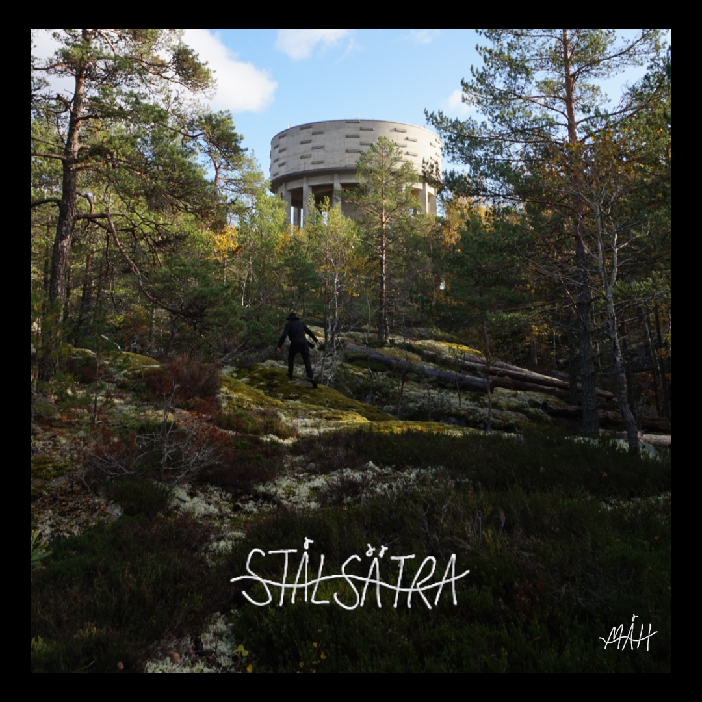

Huskyaki Atelier is a music & art company based in Huskvarna, Sweden.
Composing, recording & producing true handicraft on location or in-house.
Martin Hummerdahl's next EP "Reverie" will be released soon. Stay tuned!
"Stålsätra", Martin Hummerdahl's first EP, was released autumn 2023.
This EP will be available again soon on all major streaming platforms.
Vi har Skavsta-sår i lilla forden Men du är DJ, så vi skriker ut halsen Det är en skog i dig som ingen kommer åt När du vill ha visning är det låst Och när dom lyser och rör blir du liten och skygg Malplacerad lövtunn sömn Du haltar runt med silverrygg Men det kommer att spricka upp Jag vet det och du vet Midnatt, Stoneleigh på hemmabänken Rött neonljus, 0-5 till bekymren Får du ge recept på San Sebastián Jag behöver stå över den här rundan Och när dom lyser och rör blir jag liten och skygg Malplacerad lövtunn sömn En försvunnen silverrygg Men det kommer att spricka upp Du visste och jag vet Jag gör som Homer, ställer bilen Längesen jag såg stjärnorna
Mina riktigt riktiga vänner Kan räknas på mina fingrar Och jag är hellre helt själv Än låtsas vara nån annan Jag lovar aldrig skrämma dig igen Bara sitt här så väntar vi ner Dom blinda sover nu Men vi flyger på nätterna Jag har luktat på fel blommor Jag har gått i fel gränder Och det som jag hatar mest av allt Fick jag i mig till slut Jag lovar aldrig skrämma dig igen Bara sitt här så väntar vi ner Dom blinda sover nu Men vi flyger på nätterna Jag lovar aldrig skrämma dig igen Bara sitt här så väntar vi ner Dom blinda sover nu Men vi flyger på nätterna Vad ska jag göra då Det finns det ingen som Kan tala om för mig, för mig, För mig, för mig Vad ska jag göra då Det finns det ingen som Kan tala om för mig, för mig, För mig, för mig Jag lovar aldrig skrämma dig igen Bara sitt här så väntar vi ner Dom blinda sover nu Men vi flyger på nätterna Vem minns mig när jag försvinner Jag tror du redan glömt allt Men det som jag hatar mest av allt Ska du aldrig få se
Blev något fel med kameran Försökte skaka liv i oss Spillde ner min bästa skjorta Slängde bara på mig nåt Gärdet sörjde hundarna Så stod du där i samma rum Tog hand om varje ord & skratt Som råka trilla ur din mun Kvällen längtar utanför Behöver bara sträcka oss Försöker ta mig loss Mitt hjärta så lost in translation Hur kan man glömma dofter, piruetter Rosa himmel, rosa skor Jag vill aldrig förlora det Jag vet inte vad jag höll på med Jag är rädd för att bli övergiven Jag är fake och gör fel hela tiden Jag vill aldrig förlora det Jag vill få dig att känna dig fri Och vid liv Vet att du har haft ett jobbigt år Det är inget som du skyltar med För mig är du en Whitney Houston-sång Slentrian, som jag vill höra om Kvällen längtar utanför Behöver bara sträcka oss Försöker ta mig loss Vill inte missa ditt crazy kitten smile Hur kan man glömma dofter, piruetter Rosa himmel, rosa skor Jag vill aldrig förlora det Jag vet inte vad jag höll på med Jag är rädd för att bli övergiven Jag är fake och gör fel hela tiden Men jag vill aldrig förlora dig Jag vill få dig att känna dig fri Och vid liv Jag är rädd för att bli övergiven Jag är fake och gör fel hela tiden Men jag vill aldrig förlora dig Jag vill få dig att känna dig fri Och vid liv

Songwriting, recording, producing, mastering, sound editing, guitar, keys, bass
Music production, mix
Huskyaki Atelier
Huskvarna, Sweden
contact@huskyaki.com
Martin Åkesson Hummerdahl
Songwriter, music producer, audio engineer & concept creator
martin.ew.akesson@gmail.com